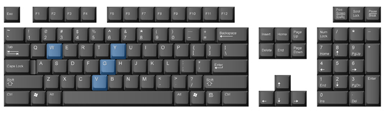
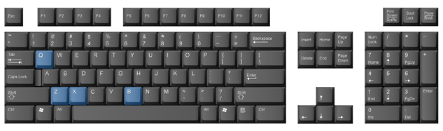

Project 1: Learning the Alphanumeric and Symbol Keys
The Rest of the Alphabetical Keys

The Y Key
The Y key is struck with the J finger. The reach is extended sideways and upward to the left. Use the L key or the semi key as your anchor.

The G Key
The G key is a sideways reach to the right with the F finger. Practise this reach as you have the others.
The W Key
The W key is struck with the S finger. It is a natural upward reach from the S key. Anchor on the A key or the F key, and practise the S-W move.
The V Key
Strike the V key with the F finger. It is a natural reach downward from the F key. Anchor on the A key, and alternate striking the F and V keys several times. Note the distance and direction your finger travels.
Follow through Practice 5 to practise the Y, G, W, and V keys just covered. Take time to review previously covered keys as well as the new keys.
Y, G, W, and V
The Y key uses the J finger (index) on your right hand.
Jjj jyj yyy jjj jyy yip joy yard yarn yield Yule
The G key uses the F finger (index) on your left hand.
Fff ggg fgf ggf ffg egg leg get log sing song dog
The W key uses the S finger (ring) on your left hand.
Sss www sws wws sww hew own war white swans swim winter wheat
The V key uses the F finger (index) on your left hand.
Fff vvv fvf vvf ffv via eve van move over love vie very view
More Practice
There is a carton of milk on this dock.
Mail a file card to the nearest stores.
Roll the dimes.
She has the food.
Elm St. is ahead.
She asked Ann for five half litres of cold milk.
Have you taken a break lately?

The B Key
The B key is struck with the F finger. It is an extended downward reach from the F key. Anchor on the A key, and trace out the distance and direction from F to B. Memorize that direction and distance.
The X Key
The X key is a natural downward reach with the S finger. You can anchor on the F key or on the A key. Choose the anchor that is most comfortable for you. Let your S finger strike the X key several times. Watch and memorize the distance and direction of finger movement.
The Q Key
The Q key is a natural upward reach from the A key. Anchor on the F key, and type the A-Q path several times. Watch the distance and direction of the finger movement.
The Z Key
You have reached the last of the alphanumeric keys. The Z key is a natural downward reach from the A key. Anchor on the F key, and strike the A and Z keys several times. Memorize the distance and direction the A finger has to travel to the Z key.
Follow through Practice 6 to practise the B, X, Q, and Z keys. Continue to review the previous keys covered. Remember, your goal is to memorize their locations and reaches in order to develop your speed and accuracy.
B, X, Q, and Z
The B key uses the F finger (index) on your left hand.
Fff bbb fbb bbf bag rob ebb bent bin big back bend
The X key uses the S finger (ring) on your left hand.
Sss xxx ssx xxs vex mix wax next taxi sixty Texans taxes
The Q key uses the A finger (pinky) on your left hand.
Aaa qqq aqq qqa quiet quip quote quick aqua quilt
The Z key uses the A finger (pinky) on your left hand.
Aaa zzz azz zza zip zap zed zig zag zing seize Belize
More Practice
Two courses are open; science and art.
Three members went: Ivan, Xander, and Helene.
When Jean called me, I was not at home.
Send them red, white, and green copies.
Our teams would not quit because of the size and voice of their fans. Their jumps and tricks brought the win.
Grab your camera and take a quick shot. Are you ready? Get that shot!